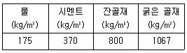
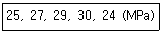
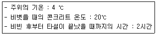
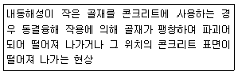
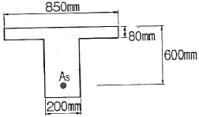
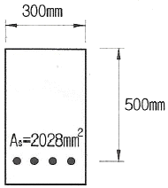
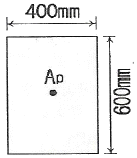

콘크리트기사 (2019-03-03 기출문제)
1과목: 재료 및 배합
1. 흡수율이 1.2%인 골재 5.5kg을 1⑤±5℃에서 24시간 건조시킨 결과 5.3kg에서 일정 질량이 되었다면, 이 골재의 표면수율은?
- 1.6%
- 2.6%
- 5.3%
- 6.7%
(정답률: 60%)
2. 콘크리트용 화학혼화제(공기 연행제, 감수제, 공기연행 감수제, 고성능 공기연행 감수제)의 성능을 확인하기 위한 콘크리트 시험에 관한 설명으로 옳지 않은 것은?
- 화학혼화제는 혼합수를 넣은 다음 이어서 믹서에 투입한다.
- 공기 연행제 및 공기연행 감수제의 동결융해 저항성 시험에는 슬럼프 80mm의 콘크리트를 적용한다.
- 고성능 공기연행 감수제의 동결융해 저항성 시험 및 경시변화량 시험에는 슬럼프 180mm의 콘크리트를 적용한다.
- 압축강도 시험은 재령 3일, 7일 및 28일의 각 재령별로 3개씩 공시체를 만들어 시험하여 그 평균값을 콘크리트 압축강도로 한다.
(정답률: 53%)

3. 콘크리트 압축강도의 시험 횟수가 15회일 때, 표준편차의 보정계수는?
- 1.00
- 1.03
- 1.08
- 1.16
(정답률: 72%)
4. 레미콘공장 회수수 중 슬러지수를 혼합수로 사용하는 경우의 유의사항에 관한 설명으로 옳지 않은 것은?
- 슬러지 고형분은 시멘트 질량의 3% 이하로 한다.
- 슬러지 고형분이 많은 경우에는 잔골재율을 증가시킨다.
- 슬러지 고형분이 많은 경우에는 단위수량을 증가시킨다.
- 슬러지 고형분이 많은 경우에는 AE제의 사용량을 증가시킨다.
(정답률: 56%)
5. 콘크리트의 배합설계에서 굵은 골재의 최대 치수에 대한 설명으로 옳지 않은 것은?
- 단면이 큰 구조물인 경우 굵은 골재의 최대 치수는 40mm를 표준으로 한다.
- 일반적인 구조물인 경우 굵은 골재의 최대 치수는 20mm 또는 25mm를 표준으로 한다.
- 무근 콘크리트 구조물인 경우 굵은 골재의 최대 치수는 50mm를 표준으로 하고, 또한 부재 최소 치수의 1/3을 초과하지 않아야 한다.
- 거푸집 양 측면사이의 최소 거리의 1/5, 슬래브 두께의 1/3, 개별천근, 다발철근, 긴장재 또는 덕트 사이 최소 순간격의 3/4을 초과하지 않아야 한다.
(정답률: 74%)
6. 시멘트의 화학성분에 관한 설명으로 옳지 않은 것은?
- 강열감량:950±50℃의 강한 열을 가했을 때의 감량으로서 시멘트 중에 함유된 H2O와 CO2의 양으로 시멘트가 풍화한 정도를 판정하는데 이용된다.
- 불용해잔분:시멘트를 염산 및 탄산나트륨 용액으로 처리하여도 녹지 않는 부분을 말하며, 일반적으로 불용해 잔분은 0.1~0.6% 정도이다.
- 수경률:시멘트 원료의 조합비를 정하는 데 가장 일반적으로 사용되며, 수경률이 크면 알루민산3석회(C3A)양이 많아져 초기강도가 높고 수화열이 큰 시멘트가 된다.
- 마그네시아(MgO):MgO의 양이 많으면 클링커 중에 미반응된 상태인 유리마그네시아로 남게 되며, 수화반응에 의해 서서히 팽창하여 콘크리트 경화체에 균열을 일으키는 원인이 되어 시멘트 중의 MgO 함량을 3% 이하로 제한하고 있다.
(정답률: 66%)
7. 콘크리트용 골재의 성질에 대한 설명으로 옳지 않은 것은?
- 굵은 골재의 흡수율은 3.0% 이하로 한다.
- 굵은 골재의 절대건조밀도는 2.5×10-3g/mm3 이상의 값을 표준으로 한다.
- 잔골재의 0.08mm체 통과량은 마모작용을 받는 경우 3% 이하로 하여야 한다.
- 잔골재의 안정성은 항산나트윰으로 5회 시험으로 평가하며, 그 손실질량은 10% 이하를 표준으로 한다.
(정답률: 48%)
8. 르샤틀리에 비중병의 0.4mL까지 광유를 주입하고 시멘트 시료 64g을 가하여 공기포를 제거한 후의 비중병의 눈금이 21mL가 되었다면, 이 시멘트의 비중은?
- 2.98
- 3.01
- 3.11
- 3.15
(정답률: 69%)
9. 레디믹스트 콘크리트의 혼합에 사용되는 물에 사용되는 상수돗물 이외의 물의 품질과 관련된 사항으로 옳지 않은 것은?
- 현탁 물질의 양:2g/L 이하
- 용해성 증발 잔류물의 양:1g/L 이하
- 염소 이온(Cl-):250mg/이하
- 모르타르 압축 강도비:지령 7일 및 재령 28일에서 75% 이상
(정답률: 65%)
10. 아래의 표와 같이 콘크리트 시방배합을 하였다. 잔골재의 표면 수량이 3.5%이고, 굵은 골재의 표면 수량이 1.5%일 때 현장배합으로 수정할 경우 단위수량은?

- 131kg
- 148kg
- 202kg
- 219kg
(정답률: 63%)
11. 물을 가한 후 2~3시간 정도 경과 후 압축강도가 10MPa 정도에 달하며 분말도가 5000cm2/g 정도인 시멘트는?
- 팽창시멘트
- 슬래그시멘트
- 초속경시멘트
- 초조강 포틀랜드 시멘트
(정답률: 72%)
12. 보통 포틀랜드 시멘트의 응결에 대한 설명으로 옳지 않은 것은?
- 온도가 높을수록 응결은 빨라진다.
- 배합수가 많을수록 응결은 빨라진다.
- 분말도가 높을수록 응결을 빨라진다.
- 시멘트의 응결 시간은 비카트 장치에 의하여 측정한다.
(정답률: 73%)
13. 콘크리트용 응결지연제에 대한 설명으로 옳지 않은 것은?
- 콘크리트의 연속타설이 진행될 경우 작업이음의 발생을 방지할 수 있다.
- 시멘트의 수화반응을 지연시키므로 응결과 경화의 진행 속도가 느리게 된다.
- 콘크리트의 응결경화불량을 방지시키므로 공사 시 거푸집의 회전율을 높일 수 있다.
- 서중 콘크리트나 운반시간이 긴 레디믹스트 콘크리트의 경우 워커빌리티의 저하를 어느정도 방지할 수 있다.
(정답률: 74%)
14. 다음 중 온도균열지수에 대한 설명으로 옳지 않은 것은?
- 온도균열지수는 그 값이 클수록 균열이 발생하기 어렵고 값이 작을수록 균열이 발생하기 쉽다.
- 온도균열지수는 재령 t에서의 콘크리트 인장강도와 수화열에 의한 온도응력의 비로서 구한다.
- 철근이 배치된 일반적인 구조물에서 균열발생을 방지하여야 할 경우 표준적인 온도균열지수는 1.5 이상이어야 한다.
- 철근이 배치된 일반적인 구조물에서 유해한 균열 발생을 제한할 경우 표준적인 온도균열지수는 1.7~2.2로 하여야 한다.
(정답률: 68%)
15. 콘크리트용 잔골재에 대한 설명 중 옳지 않은 것은?
- 잔골재의 표면은 매끄러운 것이 좋다.
- 잔골재의 형상은 구형에 가까운 것이 좋다.
- 잔골재는 크고 작은 알갱이가 골고루 혼합된 것이 좋다.
- 콘크리트 중에서 골재는 보강재 역할을 하므로 시멘트풀의 강도보다 강해야 한다.
(정답률: 62%)
16. 철근 콘크리트 보에서 스터럽과 굽힘 철근을 배근하는 주된 목적은?
- 압축 측의 좌굴을 방지하기 위하여 배근한다.
- 균열 후 그 균열에 대한 증대를 방지하기 위하여 배근한다.
- 콘크리트의 휨에 의한 인장강도가 부족하기 때문에 배근한다.
- 콘크리트의 사인장 강도가 부족하기 때문에 보에 작용하는 사인장 응력에 의한 균열을 막기 위하여 배근한다.
(정답률: 61%)
17. 콘크리트 배합강도(fcr)를 정하는 방법에 대한 설명으로 옳지 않은 것은? (단, fcr: 배합강도, fck:설계기준압축강도)
- fcr는 fck보다 충분히 크게 정하여야 한다.
- 압축강도의 시험 회수가 14회 이하이고, fck가 21MPa 미만인 경우, fcr는 fck에 7MPa을 더하여 구할 수 있다.
- 압축강도의 시험회수가 29회 이하이고 15회 이상인 경우, 계산한 표준편차에 보정계수를 나눈 값을 표준편차로 사용할 수 있다.
- 콘크리트 압축강도의 표준편차는 실제 사용한 콘크리트의 30회 이상의 시험실적으로부터 결정하는 것을 원칙으로 한다.
(정답률: 60%)
18. 골재의 안정성 시험에 사용되는 재료가 아닌 것은?
- 잔골재
- 염화바륨
- 수산화칼슘
- 황산나트륨
(정답률: 63%)
19. 철근콘크리트에 이용되는 길이가 300mm이고 지름이 20mm인 강봉에 인장력을 가한 결과 2.34×10-1mm가 신장되었다면, 이 때 강봉에 가해진 인장력은? (단. 강봉의 탄성계수=2.0×105N/mm2이다.)
- 20kN
- 37kN
- 40kN
- 49kN
(정답률: 46%)
20. 30회 이상의 시험실적으로부터 결정한 콘크리트 압축강도의 표준편차가 2MPa이고, 콘크리트의 설계기준 압축강도가 21MPa일 때 이 콘크리트의 배합강도는?
- 22.16MPa
- 22.92MPa
- 23.68MPa
- 25.66MPa
(정답률: 69%)
2과목: 제조, 시험 및 품질관리
21. 굳지 않은 콘크리트 성질에 대한 설명으로 옳지 않은 것은?
- 골재 중의 세립분, 특히 0.3mm 이하의 세립분은 콘크리트의 점성을 높이고 성형성을 좋게 한다.
- 일반적으로 분말도가 높은 시멘트를 사용한 경우에는 탁월한 점성을 보이나 오히려 유동성이 저하하는 경향도 있을 수 있다.
- 단위 시멘트량이 많아질수록 콘크리트의 성형성이 증가하므로 일반적으로 빈배합의 경우는 부배합의 경우보다 워커빌리티가 좋다.
- 단위수량이 많을수록 콘크리트의 반죽질기는 질게 되지만, 단위수량을 증가시키면 재료분리가 발생하기 쉬워지므로 워커빌리티가 좋아진다고는 말할 수 없다.
(정답률: 64%)
22. 콘크리트의 침하균열에 대한 설명으로 옳지 않은 것은?
- 주로 보 및 바닥판의 하단에서 발생한다.
- 콘크리트 타설 후 1~3시간 정도에서 발생한다.
- 블리딩이 큰 콘크리트일수록 침하균열이 발생할 가능성이 크다.
- 타설속도를 늦게 하고 1회의 타설 높이를 작게 하면 침하균열을 방지할 수 있다.
(정답률: 50%)
23. 압력법에 의한 굳지 않은 콘크리트의 공기량시험(KS F 2421)에 대한 설명으로 옳지 않은 것은?
- 이 시험의 원리는 보일의 법칙을 기초로 한 것이다.
- 불을 붓지 않고 시험하는 경우(무주수법)의 용기 용적은 적어도 5L 이상으로 한다.
- 콘크리트의 공기량(A)은 콘크리트의 겉보기 공기량(A1)에서 골재 수정 계수(G)를 뺀 값으로 구할 수 있다.
- 골재 수정 계수가 정확히 구해지지 않는 인공 경량 골재와 같은 다공질 골재를 사용한 콘크리트에 대해서는 적당하지 않다.
(정답률: 70%)
24. AE제를 사용한 경우에 연행되는 공기량의 설명으로 옳은 것은?
- 슬럼프가 작을수록 많게 된다.
- 물-결합재비가 클수록 많게 된다.
- 단위 잔골재량이 작을수록 많게 된다.
- 콘크리트의 온도가 높을수록 많게 된다.
(정답률: 39%)
25. 시멘트의 저장에 대한 설명으로 옳지 않은 것은?
- 시멘트는 방습적인 구조로 된 사일로 또는 창고에 품종별로 구분하여 저장하여야 한다.
- 저장기간이 길어질 우려가 있는 포대시멘트는 15포대 이하로 쌓아 올려야 한다.
- 포대시멘트를 저장할 때는 창고의 마룻바닥과 지면 사이에 0.3m 정도의 거리를 두는 것이 좋다.
- 시멘트의 온도가 너무 높을 때는 그 온도를 낮춘 다음 사용하는 것이 좋으며, 시멘트의 온도는 일반적으로 50℃ 정도 이하를 사용하는 것이 좋다.
(정답률: 68%)
26. 콘크리트 탄산화 깊이 측정 시험에서 가장 많이 사용되는 용액은?
- 염산 용액
- 황산 용액
- 마그네슘 용액
- 페놀프탈레인 용액
(정답률: 74%)
27. 콘크리트의 받아들이기 품질검사 항목에 대한 판정기준을 설명한 것으로 옳지 않은 것은?
- 공기량의 허용오차는 ±0.5%이다.
- 염소이온량은 원칙적으로 0.3kg/m3 이하여야 한다.
- 펌퍼빌리티는 콘크리트 펌프의 최대 이론 토출압력에 대한 최대 압송부하의 비율이 80% 이하여야 한다.
- 굳지 않은 콘크리트 상태는 외관 관찰로서 판단하여 워커빌리티가 좋고, 품질이 균질하며 안정하여야 한다.
(정답률: 65%)
28. 콘크리트의 내구성에 관한 일반적인 설명으로 옳지 않은 것은?
- 콘크리트는 자체가 강한 알칼리성이기 때문에 농도가 높은 황산이나 염산에 대해서는 침식이 된다.
- 콘크리트의 탄산화는 공기 중의 탄산가스의 농도가 높을수록 또한 온도가 낮을수록 탄산화 속도는 빨라진다.
- 동결융해작용에 대한 저항성을 증가시키기 위해 물-결합재비가 작은 콘크리트나 AE콘크리트를 사용하는 것이 좋다.
- 황산염은 각종 공업원료 및 비료로서 널리 사용되고 있고 온천 및 하천수에도 함유되어 있어 콘크리트를 열화시킨다.
(정답률: 62%)
29. 콘크리트 품질관리의 기본 4단계를 순차적으로 나열한 것은?
- 계획-검토-실시-조치
- 검토-계획-실시-조치
- 계획-실시-검토-조치
- 검토-실시-계획-조치
(정답률: 58%)
30. 원추형 공시체(지름 150mm, 길이 300mm)를 사용하여 쪼갬 인장 강도 시험을 실시하였다. 파괴시의 최대 하중이 210kN이었다면 이 콘크리트의 쪼갬 인장 강도는?
- 1.49MPa
- 1.62MPa
- 2.97MPa
- 3.24MPa
(정답률: 57%)
31. 콘크리트 비비기에 대한 설명으로 옳지 않은 것은?
- 비비기는 미리 정해둔 비비기 시간의 3배 이상 계속하지 않아야 한다.
- 콘크리트의 재료는 반죽된 콘크리트가 균질하게 될 때까지 충분히 비벼야 한다.
- 가경식 믹서를 사용하고 비비기 시간에 대한 시험을 실시하지 않은 경우 그 최소시간은 1분 30초 이상을 표준으로 한다.
- 강제식 믹서를 사용하고 비비기 시간에 대한 시험을 실시하지 않은 경우 그 최소시간은 2분 이상을 표준으로 한다.
(정답률: 64%)
32. 레디믹스트 콘크리트(KS F 4009)의 품질기준 중 슬럼프 및 슬럼프 플로에 대한 설명으로 옳지 않은 것은?
- 슬럼프가 25mm인 경우 허용 오차는 ±10mm이다.
- 슬럼프가 80mm인 경우 허용 오차는 ±25mm이다.
- 슬럼프 플로가 600mm인 경우 허용 오차는 ±100mm이다.
- 슬럼프 플로가 700mm인 경우 허용 오차는 ±125mm이다.
(정답률: 65%)
33. 콘크리트의 길이 변화 시험(KS F 2424)에 대한 설명으로 옳지 않은 것은?
- 공시체의 측면 길이 변화를 측정하는 방법으로 다이얼 게이지 방법이 사용된다.
- 콤퍼레이터 방법의 시험에는 표선용 젖빛유리, 각선기, 측정기 등의 기구가 사용된다.
- 콘크리트 시험편의 길이 변화 측정 방법에는 콤퍼레이터 방법, 콘택트 게이지 방법 또는 다이얼 게이지 방법이 있다.
- 시험편의 치수는 콘크리트의 경우 너비는 높이와 같게 하되, 굵은 골재의 최대 치수의 3배 이상이며, 길이는 너비 또는 높이의 3.5배 이상으로 한다.
(정답률: 55%)
34. 보통 포틀랜드 시멘트를 사용한 콘크리트의 압축강도를 측정하였다. 아래 표의 데이터를 이용하여 구한 콘크리트 강도의 변동계수는? (단, 표준편차는 불편분산 개념에 의한다.)

- 8.2%
- 9.4%
- 11.3%
- 12.6%
(정답률: 48%)
35. 콘크리트 압축 강도 추정을 위한 반발 경도시험방법(KS F 2730)에 대한 설명으로 옳지 않은 것은?
- 미장이 되어 있는 면은 마감면을 완전히 제거한 후 시험을 해야 한다.
- 타격 위치는 가장자리로부터 100mm 이상 떨어지고, 서로 30mm 이내로 근접해서는 안 된다.
- 시험할 콘크리트 부재는 두께가 100mm이상이어야 하며, 하나의 구조체에 고정되어야 한다.
- 시험값 20개의 평균으로부터 오차가 10% 이상이 되는 경우의 시험값은 버리고 나머지 시험값의 평균을 구한다.
(정답률: 64%)
36. 다음 재료 중 재료계량의 허용오차가 ±3%로 규정된 재료가 아닌 것은?
- 잔골재
- 혼화재
- 혼화제
- 굵은 골재
(정답률: 69%)
37. 콘크리트의 블리딩 시험 방법에 대한 설명으로 옳지 않은 것은?
- 시험 중에는 실온 (20±3)℃로 한다.
- 콘크리트를 채워 넣고 콘크리트의 표면이 용기의 가장자리에서 (30±3) mm높아지도록 고른다.
- 최초로 기록한 시각에서부터 60분 동안 10분마다, 콘크리트 표면에서 스며 나온 물을 빨아낸다.
- 물을 쉽게 빨아내기 위하여 2분 전에 두께 약 50mm의 불록을 용기의 한쪽 밑에 주의깊게 괴어 용기를 기울이고, 물을 빨아낸 후 수평위치로 되돌린다.
(정답률: 42%)
38. 콘크리트 배치믹서는 중력식 믹서와 강제식 믹서로 크게 나눌 수 있다. 다음 중 중력식 믹서에 해당하는 것은?
- 1축 믹서
- 2축 믹서
- 드럼 믹서
- 팬형 믹서
(정답률: 65%)
39. 굳지 않은 콘크리트의 염화물 분석방법이 아닌 것은?
- 분극 저항법
- 이온 전극법
- 흡광 광도법
- 질산은 적정법
(정답률: 54%)
40. 동결융해에 대한 콘크리트의 저항정도를 알아보기 위하여 내구성 지수(Durability Factor)를 구하고자 한다. 동결융해 시험공시체가 상대 동 탄성계수 60%에 도달했을 때 230사이클이 되었다면 이 콘크리트의 내구성 지수는? (단, 동결 융해에의 노출이 끝날 때의 사이클수(M)는 300사이클을 적용한다.)
- 46
- 50
- 56
- 60
(정답률: 40%)
3과목: 콘크리트의 시공
41. 고강도 콘크리트의ㅣ 배합 및 비비기에 관한 설명으로 틀린 것은?
- 비비기 시간은 시험에 의해서 정하는 것을 원칙으로 한다.
- 믹서에 재료를 투입할 때 고성능 감수제는 혼합수와 동시에 투여해야 한다.
- 단위 시멘트량은 소요의 워커빌리티 및 강도를 얻을 수 있는 범위 내에서 가능한 한 적게 되도록 시험에 의해 정하여야 한다.
- 기상의 변화가 심하거나 동결융해에 대한 대책이 필요한 경우를 제외하고는 공기연행제를 사용하지 않는 것을 원칙으로 한다.
(정답률: 50%)
42. 일반 수중 콘크리트 타설의 원칙에 대한 설명으로 틀린 것은?
- 콘크리트가 경화될 때까지 물의 유동을 방지하여야 한다.
- 한 구획의 콘크리트 타설을 완료한 후 레이턴스를 모두 제거하고 다시 타설하여야 한다.
- 콘크리트 타설에서 완전히 물막이를 할 수 없는 경우 유속은 150mm/s 이하로 하여야 한다.
- 콘크리트를 수중에 낙하시키면 재료 분리가 일어나므로 콘크리트 수중에 낙하시키지 않아야 한다.
(정답률: 61%)
43. 팽창 콘크리트의 시공에 관한 설명으로 틀린 것은?
- 팽창재는 원칙적으로 다른 재료를 투입함과 동시에 믹서에 투입한다.
- 한중 콘크리트의 경우 타설할 때의 콘크리트 온도는 10℃ 이상 20℃ 미만으로 한다.
- 팽창 콘크리트의 비비기 시간은 강제식 믹서를 사용하는 경우는 2분 이상으로 하여야 한다.
- 제조 시 포대 팽창재를 사용하는 경우에는 포대수로 계산해도 되나, 1포대 미만의 것을 사용하는 경우에는 반드시 질량으로 계량하여야 한다.
(정답률: 58%)
44. 해양 콘크리트에 대한 설명으로 틀린 것은?
- 해양 콘크리트 구조물에 쓰이는 콘크리트의 설계기준강도는 30MPa 이상으로 한다.
- 해양 콘크리트는 열화 및 강재의 부식에 의해 그 기능이 손상되지 않도록 해야 한다.
- 초기 강도가 작은 중용열 포틀랜드 시멘트는 해양 구조물의 재료로 적합하지 않다.
- 콘크리트가 충분히 경화되지 전에 해수에 씻기지 않도록 보호하여야 하며, 이 기간은 보통 포틀랜드 시멘트를 사용할 경우 대게 5일간 이다.
(정답률: 61%)
45. 콘크리트의 내구성을 고려하여 해주 중에 사용되는 해양 콘크리트의 물-결함재비를 정할 경우 그 최댓값은?
- 40%
- 45%
- 50%
- 55%
(정답률: 62%)
46. 바닥틀의 시공이음에 대한 설명으로 옳은 것은?
- 슬래브 또는 보의 지점 부근에 두어야 한다.
- 슬래브 또는 보의 경간 중앙부 부근에 두어야 한다.
- 보가 그 경간 중에서 작은 보와 교차할 경우에는 교차지점에서의 시공이음을 설치하여야 한다.
- 보가 그 경간 중에서 작은 보와 교차할 경우에는 작은 보의 폭의 약 5배 거리만큼 떨어진 곳에 보의 시공이음을 설치하여야 한다.
(정답률: 59%)
47. 철근이 배치된 구조물에서 균열 발생을 제한할 경우 온도균열지수의 값은?
- 0.7 미만
- 0.7~1.2
- 1.2~1.5
- 1.5 이상
(정답률: 54%)
48. 콘크리트의 비비기로부터 타설이 끝날때까지의 한도시간으로 옳은 것은?
- 외기온도가 25℃ 미만일 때는 1.5시간, 25℃이상일 때는 1시간을 한도 한다.
- 외기온도가 25℃ 미만일 때는 1시간, 25℃이상일 때는 1.5시간을 한도로 한다.
- 외기온도가 25℃ 미만일 때는 2시간, 25℃이상일 때는 1.5시간을 한도로 한다.
- 외기온도가 25℃ 미만일 때는 1.5시간, 25℃이상일 때는 1.5시간을 한도로 한다.
(정답률: 72%)
49. 차폐용 콘크리트로서 중성자의 차폐를 필요로 하지 않는 경우 시방서에 명기하지 않아도 되는 성능목적은?
- 밀도
- 붕소량
- 압축강도
- 설계허용온도
(정답률: 54%)
50. 한중 콘크리트의 티설이 끝날을 때의 콘크리트 온도는? (문제 오류로 가답안 발표시 1번으로 발표되었지만 확정답안 발표시 모두 정답처리 되었습니다. 여기서는 1번을 누르면 정답 처리 됩니다.)

- 18.8℃
- 19.8℃
- 20.8℃
- 21.8℃
(정답률: 60%)
51. 콘크리트의 배합강도를 예측하는데 이용되는 적산온도의 적용으로 틀린 것은?
- 양생 종료 시기
- 거푸집 해체시기
- 동바리 해체시기
- 프리텐셔닝 시기
(정답률: 68%)
52. 방사선 차폐용 콘크리트의 시공에 관한 설명 중 틀린 것은?
- 이어치기에 주의를 기울이지 않을 경우 방사선 유출의 위험성이 상존한다.
- 콘크리트의 슬럼프는 작업에 알맞은 범위내에서 가능한 한 작은 값이어야 한다.
- 콘크리트 타설 시 재료분리가 발생되지 않도록 과도한 진동기 사용은 자제한다.
- 차폐용 콘크리트 경화 후의 밀도와 결합수량은 차폐설계상 상온조건하에서 규정값을 만족해야 한다.
(정답률: 53%)
53. 한중 콘크리트에 관한 내용으로 틀린 것은?
- 일평균기온 4℃ 이하가 예상되는 조건에서 시공하여야 한다.
- 응결이 시작되기 전의 초기동해는 녹는 시점에서 잘 다져주면 강도나 내구성에는 거의 문제가 없다.
- 빠른 수화반응 유도 및 동결방지를 위하여 시멘트를 포함한 모든 재료를 직접 가열하여 소요 오온도가 얻어지도록 한다.
- 콘크리트가 동결하지 않더라도 5℃ 이하의 저온에 노출된 경우 응결 및 경화반응이 상당히 지연되므로 균열, 잔류변형 등의 문제가 생기기 쉽다.
(정답률: 50%)
54. 숏크리트 코어 공시체(ø100×100mm)로부터 채취한 강섬유의 질량이 61.2g일 때, 강섬유 혼입률은? (단, 강섬유의 밀도는 7.85g/cm3)
- 0.5%
- 1%
- 3%
- 5%
(정답률: 55%)
55. 슬럼프가 20mm 미만의 된반죽 공장제품 콘크리트의 반죽질기를 측정하는 시험으로 가장 적합하지 않은 것은?
- 관입시험
- 슬럼프 시험
- 다짐계수 시험
- 외압 병용VB 시험
(정답률: 56%)
56. 콘크리트의 양생에 대한 일반적인 설명으로 옳은 것은?
- 시멘트의 수화반응은 양생온도에 크게 좌우되지 않는다.
- 초기재령에서의 급격한 건조는 강도발현을 지연시킬 뿐만 아니라 표면균열의 원인이 된다.
- 고로 슬래그 미분말을 50% 정도 치환하면 보통 콘크리트에 비해서 습윤양생 기간을 단축시킬 수 있다.
- 콘크리트 표면이 건조함에 따라 수밀성이 향상되기 때문에 수밀 콘크리트는 가능한 한 빨리 건조될 수 있도록 습윤양생 기간을 일반보다 짧게 한다.
(정답률: 50%)
57. 콘크리트 부재의 표면에 발생하는 기포에 대한 내용으로 틀린 것은?
- 단위 시멘트량이 증가하면 콘크리트 부재 표면의 기포는 감소하는 경향이 있다.
- 경사면의 윗면은 수직면의 경우보다 더 많은 기포가 발생하는 경향이 있다.
- 거푸집 표면 부근의 진동 다짐은 부재표면의 기포를 증가시킬 수도 있다.
- 목재 거푸집의 경우 거푸집이 건조하면기포가 감소하고, 강재 거푸집의 경우 온도가 높으면 기포가 감소하는 경향이 있다.
(정답률: 50%)
58. 숏크리트의 24시간 재령 초기강도 표준값으로 옳은 것은?
- 0.5~1.0MPa
- 1.0~3.0MPa
- 5.0~10.0MPa
- 10.0~20.0MPa
(정답률: 64%)
59. 단위 시멘트량 200kg, W/B(물-결합재비) 50%, 공기량 2%, 잔골재율 34%, 시멘트 비중 3.17, 잔골재 비중 2.6일 때, 콘크리트 1m3를 만드는 데 필요한 잔골재량은?
- 722.02kg
- 856.6kg
- 1012.5kg
- 1482.8kg
(정답률: 50%)
60. 일반 콘크리트의 다지기에 대한 설명으로 틀린 것은?
- 내부진동기는 콘크리트로부터 천천히 빼내어 구멍이 남지 않도록 한다.
- 진동다지기를 할 때에는 내부진동기를 하층의 콘크리트 속으로 0.1 m 정도 찔러 넣어야 한다.
- 재진동을 할 경우에는 콘크리트에 나쁜 영향이 생기지 않도록 초결이 일어난 후에 실시하여야 한다.
- 콘크리트는 타설 직후 바로 충분히 다져서 콘크리트가 철근 및 매설물 주위와 거푸집의 구석구석까지 잘 채워 밀실한 콘크리트가 되도록 하여야 한다.
(정답률: 73%)
4과목: 구조 및 유지관리
61. 다음 중 시험 항목에 따른 점검방법으로 옳지 않은 것은?
- 내부균열-음향방출법
- 피복 두께-열적회선법
- 탄산화-페놀프탈레인법
- 철근부식-분극저항 측정방법
(정답률: 53%)
62. 철근의 이음에 대한 설명으로 틀린 것은?
- D35를 초과하는 철근은 겹침이음을 할 수 없다.
- 다발철근의 겹침이음은 다발 내의 개개 철근에 대한 겹침이음길이를 기본으로 하여 결정하여야 한다.
- 용접이음은 용접용 철근을 사용해야 하며 철근의 설계기준항목강도 fy의 125% 이상을 발휘할 수 있는 완전용접이어야 한다.
- 휨부재에서 서로 직접 접촉되지 않게 겹침이음된 철근은 횡방향으로 소요 겹침이음길이의 1/5 또는 150mm중 큰 값 이상 떨어지지 않아야 한다.
(정답률: 45%)
63. 1방향 슬래브의 구조상세에 대한 설명으로 틀린 것은?
- 1방향 슬래브의 두께는 최소 200mm 이상으로 하여야 한다.
- 수축ㆍ온도철근의 간격은 슬래브 두께의 5배 이하, 또한 450mm 이하로 하여야 한다.
- 슬래브의 정모멘트 철근 및 부모멘트 철근의 중심 간격은 위험단면에서는 슬래브 두께의 2배 이하이어야 하고, 또한 300mm이하로 하여야 한다.
- 슬래브의 정모멘트 철근 및 부모멘트 철근의 중심 간격은 위험단면이 아닌 기타의 단면에서는 슬래브 두께의 4배 이하이어야 하고, 또한 450mm 이하로 하여야 한다.
(정답률: 36%)
64. 철근콘크리트 구조물에서 균열 폭을 줄일 수 있는 방법에 대한 설명으로 틀린 것은?
- 철근이 배근되는 곳에서 피복두께를 크게 한다.
- 콘크리트의 인장구역에 철근을 골고루 배치한다.
- 철근에 발생하는 응력이 커지지 않도록 충분하게 배근한다.
- 동일한 철근량을 사용할 경우 굵은 철근을 사용하기 보다는 가는 철근을 여러 개 사용한다.
(정답률: 64%)
65. 아래의 표에서 설명하는 현상은?

- 침식(erosion)
- 용식(corrosion)
- 팝아웃(pop-out)
- 화학적 침식(chemical erosion)
(정답률: 74%)
66. 콘크리트 구조물에서 코어채취에 의한 시험으로 알 수 없는 것은?
- 인장강도
- 고유진동수
- 탄산화 깊이
- 염화물이온함유량
(정답률: 61%)
67. 콘크리트 내에서 염소이온의 확산에 영향을 주는 인자가 아닌 것은?
- 양생조건
- 물-결합재비
- 철근의 부식여부
- 모세관 공극의 양
(정답률: 37%)
68. 아래의 그림과 같은 T형 보의 설계휨강도 øMn는? (단, 인장지배단면이며, fck=30MPa, fy=400MPa, AS=3850mm2이다.)

- 645kNㆍm
- 739kNㆍm
- 837kNㆍm
- 937kNㆍm
(정답률: 42%)
69. 콘크리트의 건조수축으로 인한 균열을 제어하기 위한 대책으로 틀린 것은?
- 가능한 한 배합수량을 적게 한다.
- 실리카 퓸을 사용하여 강도를 높인다.
- 단면 크기에 따라 골재의 크기를 적절히 조절한다.
- 가급적 흡수율이 작고 입도가 양호한 골재를 사용한다.
(정답률: 60%)
70. 그림과 같은 단면에 As=4-D25(2028mm2)이 배근되어 있고, 계수전단력 Vu=200kN, 계수휨모멘트 Mu=40kNㆍm가 작용하고 있는 보가 있다. 콘크리트가 부담할 수 있는 전단강도(Vc)를 정밀식을 사용하여 구하면? (단, 경량콘크리트계수 λ=1.0, fck=21MPa, fy=400MPa이고, Mu는 전단을 검토하는 단면에서 Vu와 동시에 발생하는 계수휨모멘트이다.)

- 237.6kN
- 199.3kN
- 145.7kN
- 107.6kN
(정답률: 28%)
71. 폭이 400mm, 유효깊이가 500mm인 단철근 직사각형 보 단면에서 강도설계법으로 구한 균형 철근향은? (단, fck=40MPa, fy=400MPa이다.)
- 6813mm2
- 7313mm2
- 7813mm2
- 8313mm2
(정답률: 39%)
72. 다음 중 알칼리 골재반응을 억제하기 위한 대책으로 부적절한 것은?
- 충분한 수분 공급
- 혼합 시멘트 사용
- 저알칼리형 포틀랜드 시멘트 사용
- 콘크리트 중의 알칼리 이온 촐량 규제
(정답률: 53%)
73. 콘크리트의 크리프에 대한 설명으로 틀린 것은?
- 고강도 콘크리트는 저강도 콘크리트보다 크리프가 작다.
- 콘크리트 주위의 온도와 습도가 높을수록 크리프 변형은 커진다.
- 물-결합재비가 큰 콘크리트는 물-결합재비가 작은 콘크리트보다 크리프가 크게 일어난다.
- 일정한 응력이 장시간 계속하여 작용하고 있을 때, 변형이 계속 진행되는 현상을 크리프라고 한다.
(정답률: 47%)
74. 콘크리트보강공법 중 상판 콘크리트 상면을 절삭ㆍ연마한 후 강섬유 보강콘크리트 등으로 상면의 두께를 증설하는 상명 두께증설공법의 특징에 대한 설명으로 틀린 것은?
- 일반포장용 기계로 시공이 가능하고, 공기가 짧다.
- 상판 상면에서의 작업이므로 비계 등을 구성할 필요가 없다.
- 상판의 유효두께가 커져서 휨, 전단 및 비틀림 등에 대해서도 보강효과가 얻어진다.
- 증가되는 상판의 두께에 제한없이 적용 가능하므로, 기존 구조물보다 상당히 큰 내하력을 얻을 수 있다.
(정답률: 60%)
75. 직사각형 단면의 보가 계수 전단력 Vu=75kN을 전단보강철근 없이 지지하고자 할 경우 필요한 단면의 유효깊이 최솟값은? (단, b=350mm, fck=28MPa, fy=400MPa)
- 612mm
- 648mm
- 638mm
- 713mm
(정답률: 45%)
76. 강교에서 피로균열의 진전을 일시적으로 방지하고 선단부의 국부적인 응력집중을 해소하기 위한 보수공법은?
- Pull-out 공법
- stop-hole 공법
- 에폭시주입 공법
- 탄소섬유 시트 공법
(정답률: 41%)
77. 철근 콘크리트의 역학적 해석을 위한 기본 가정 중 옳지 않은 것은?
- 철근의 변형률은 중립축으로부터 거리에 비례하는 것으로 가정할 수 있다.
- 철근 콘크리트 보는 사용하중에 의해 휨을 받아 변형한 후에도 균열이 생기지 않는다.
- 콘크리트의 압축응력의 분포와 콘크리트변형률 사이의 관계는 직사각형, 사다리꼴, 포물선형 또는 강도의 예측에서 광범위한 실험의 결과와 실적으로 일치하는 어떤 형상으로도 가정할 수 있다.
- 철근의 응력이 설계기준항복강도 fy이하일 때, 철근의 응력은 그 변형률에 Es를 곱한 값으로 하고, 철근의 변형률이 fy에 대응하는 변형률보다 큰 경우 철근의 응력은 변형률에 관계없이 fy로 하여야 한다.
(정답률: 54%)
78. 단면의 도심에 PS 강재가 배치되어 있으며 초기 프리스트레스 힘 120kN을 작용시켰다. 콘크리트의 하연응력이 0이 되도록 하려면 휨모멘트는? (단, 이 때 손실은 15%로 가정한다.)

- 8.2kNㆍm
- 9.2kNㆍm
- 10.2kNㆍm
- 11.2kNㆍm
(정답률: 47%)
79. 콘크리트를 각종 섬유로 보강하여 보수공사를 진행할 경우 섬유가 갖추어야 할 조건으로 옳지 않은 것은?
- 섬유의 압축강도가 충분해야 한다.
- 시공이 어렵지 않고 가격이 저렴해야 한다.
- 내구성, 내열성, 내후성 등이 우수해야 한다.
- 섬유와 시멘트 결합재와의 부착이 우수해야 한다.
(정답률: 68%)
80. b=400mm, d=600mm, fck=24MPa인 철근콘크리트 부재에 수직스트럽을 배치하고자 한다. 스트럽이 받을 수 있는 전단강도 Vs=400kN일 때 전단철근의 간격은 몇 mm이하로 하여야 하는가? (단, 경량콘크리트계수 λ=1.0이다.)
- 100mm
- 150mm
- 200mm
- 300mm
(정답률: 42%)
화학혼화제는 콘크리트 혼합물에 첨가되어 콘크리트의 경화와 강도를 향상시키는 역할을 한다. 이를 확인하기 위해 콘크리트 시험을 실시하는데, 공기 연행제 및 공기연행 감수제의 동결융해 저항성 시험에는 슬럼프 80mm의 콘크리트를 적용하고, 고성능 공기연행 감수제의 동결융해 저항성 시험 및 경시변화량 시험에는 슬럼프 180mm의 콘크리트를 적용한다. 또한, 압축강도 시험은 재령 3일, 7일 및 28일의 각 재령별로 3개씩 공시체를 만들어 시험하여 그 평균값을 콘크리트 압축강도로 한다.